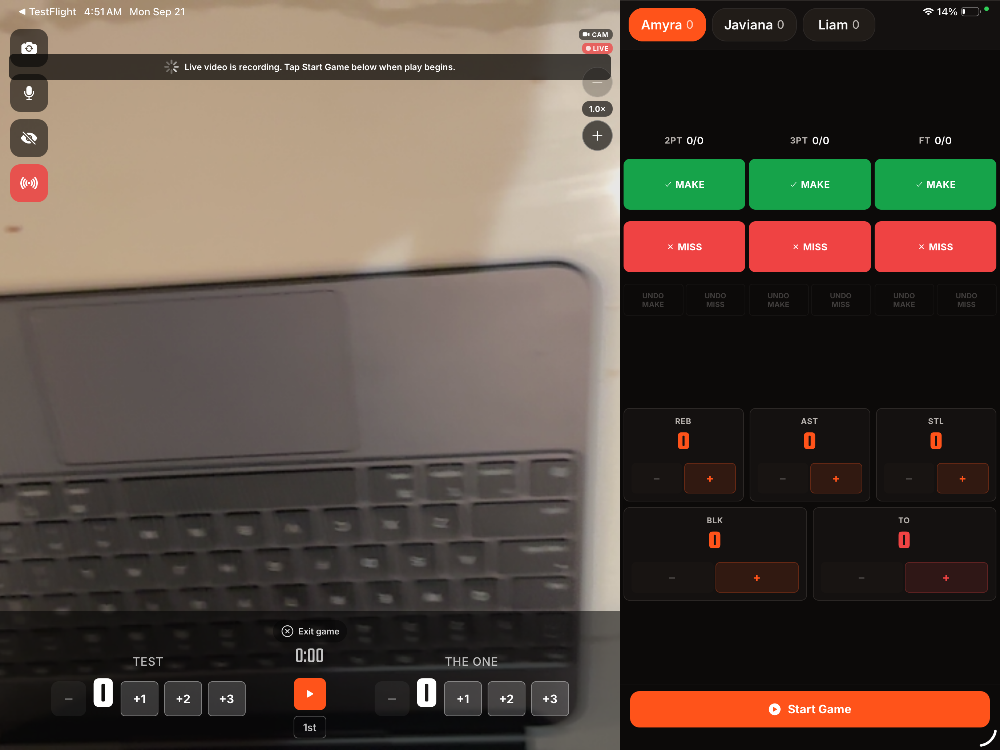
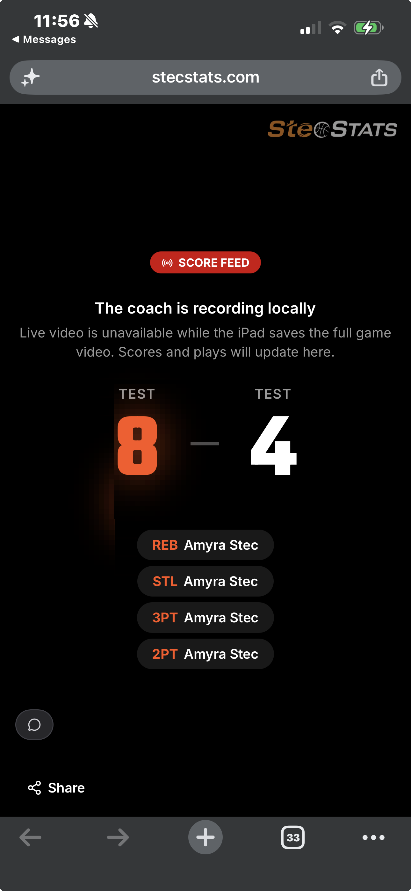

Google presents its own consent screen. StecStats requests only the permission required to create/manage coach-initiated broadcasts and upload coach-selected videos.
https://www.googleapis.com/auth/youtube
No password is collected by StecStats.
Authorization code is exchanged server-side.
Refresh token is encrypted at rest.
Access is initiated explicitly by tapping “Connect YouTube.”
PROFILE • YOUTUBE
YouTube
▶ Connect YouTube
Share highlights to your channel
›
▶ YouTube Connected
Tap to disconnect
›
These are the two production states implemented in the StecStats coach app.
Evidence source: production StecStats interface and implemented OAuth flow. The Google consent surface is hosted by Google and appears after the coach taps Connect YouTube.
StecStats — Revocation / Disconnect
Users can revoke YouTube access from inside StecStats or from their Google Account.
IN-APP REVOCATION
YouTube
▶ YouTube Connected
Tap to disconnect
›
Disconnect YouTube
Remove your YouTube channel connection?
CancelDisconnect
What disconnect does
Coach confirms the destructive action.
StecStats revokes the Google OAuth token.
Stored YouTube authorization is removed from the account.
The interface immediately returns to “Connect YouTube.”
Google-side revocation
The same permission can also be removed at:
https://myaccount.google.com/connections
Users select StecStats and choose to remove access. The Privacy Policy and Account Deletion page also explain disconnection and deletion.
The disconnect control is available from Profile without contacting support. Videos already published to the user’s own YouTube channel remain controlled by that user in YouTube.
StecStats — Video Upload Interface
A coach explicitly chooses the title and visibility before any YouTube upload starts.
GAME • HIGHLIGHTS
Upload to YouTube
Upload this generated highlight reel to the connected coach’s YouTube channel.
StecStats Highlights — Test vs Ghigh
Unlisted (link-only) ▾
CancelUpload to YouTube
The upload button is disabled while an upload is in progress. The user receives success or error status.
User control
No automatic upload from the device.
Upload begins only after the coach presses the final button.
Title and privacy status are shown before submission.
API operation
videos.insert
The uploaded file is the user-selected/generated game highlight. Upload quota is accounted for separately under Google’s granular upload quota.
Production interface labels: “Upload to YouTube,” title input, privacy selector, Cancel, and final Upload to YouTube action.
StecStats — Player / Website & Mobile Experience
Actual StecStats production screenshots showing the coach recording/live interface and the public stecstats.com viewer.


Coach app
The iPad coach interface records the game, maintains the score, and starts a coach-initiated live session.
Public viewer
The public stecstats.com link provides a branded viewing experience with live score and play updates. YouTube distribution is unlisted and controlled by the coach.
Left: TestFlight production coach interface. Right: public web viewer with the stecstats.com address bar visible.